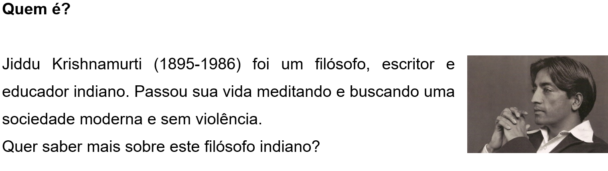

CAPÍTULO 1: INTRODUÇÃO À FILOSOFIA E CONTEXTO DA INDÚSTRIA METALÚRGICA
SITUAÇÃO-PROBLEMA
“Com certeza, a vida não se resume a ter um emprego.”
Por que passamos pela batalha dos estudos? É apenas para passar pelos exames, obter um certificado e conseguir um emprego? Ou a função da educação é preparar-nos enquanto somos jovens para entender o processo completo da vida? Ter um emprego e ganhar a vida é necessário – mas isso é tudo? Somos educados apenas para isso? Com certeza, a vida não se resume a ter um emprego ou uma profissão: a vida é maior e mais profunda do que isso, ela é um grande mistério, uma longa jornada que atravessamos como seres humanos. Se nós apenas nos preparamos para ganhar a vida, sobreviver, nós podemos estar perdendo o objetivo da vida; e entender a vida é muito mais importante do que meramente se preparar para uma prova de matemática, física, ou qualquer outra disciplina escolar.
Jiddu Krishnamurti, em “A Função da Educação”.
Vamos filosofar. A vida se resume a conseguir um emprego? Que outras coisas são importantes na vida? Coloque suas ideias no papel.
A) Faça uma lista com as 10 “coisas” mais importantes da vida, na sua avaliação:
1.
2.
3.
4.
5.
6.
7.
8.
9.
10.
B) Quando você montou a lista acima, usou alguns critérios. Mesmo que de maneira inconsciente. Agora dê uma olhada na lista com olhos críticos: que valores estão por trás da sua avaliação? Emoções e sentimentos; valores materiais; outros seres humanos; Deus; felicidade; justiça? Esses valores são concretos ou abstratos?
C) A partir da reflexão acima, resuma em um parágrafo a sua filosofia de vida:
Você já se fez, alguma vez, essas perguntas? Sente necessidade de encontrar uma resposta? Repare que não existe uma resposta científica que determine, de uma vez por todas, a solução objetiva para esses questionamentos. Esse tipo de perguntas que dizem respeito a todos os seres humanos pertence ao campo da filosofia. Bem-vindo, você já começou a filosofar.

Contextualizando
Por que existe a realidade? O que é a verdade? O que é certo ou errado? O que é a justiça? Qual a melhor maneira de organizar a sociedade? Deus existe? Como devo viver? Existe vida após a morte? A ciência tem sempre a última palavra? Devemos obedecer aos governantes? Por que os homens fazem a guerra? De onde vem tanta violência? A beleza está nos olhos de quem vê? O que é a felicidade? Os fins justificam os meios? Ao tentar responder perguntas dessa natureza, que tentam desvendar alguns dos maiores mistérios da existência humana, os homens inventaram a filosofia. Na verdade, ao elaborar essas perguntas já estamos fazendo filosofia.
Para entender um pouco mais sobre o que é a filosofia, assista ao vídeo a seguir.
(Re)construindo conhecimentos
A atividade filosófica ou a prática filosófica elabora e tenta responder essas questões usando o poder da razão. Uma capacidade que todos temos e podemos desenvolver. A palavra “filosofia” vem do grego (philo + sohia) e significa “amor à sabedoria”. Foi criada, ao que se sabe, por Pitágoras para falar da atitude dos homens que buscam o conhecimento e a sabedoria. A palavra”filosofia” expressa não a posse e sim o desejo do conhecimento. Filosofar, podemos dizer, é embarcar na aventura do conhecimento. Existem várias concepções diferentes de filosofia. Mas elas compartem algumas características em comum. Por isso, podemos concebê-la como:
1. Atividade intelectual de busca do conhecimento, expressa uma determinada atitude frente ao mundo em que vivemos. O filósofo é alguém curioso, que duvida, que tem o desejo de conhecer e a capacidade de problematizar e de refletir.
Foi pela admiração pelo mundo que os homens começaram a filosofar, tanto nos tempos antigos como agora. Perplexos e maravilhado, de início, com as coisas mais triviais, avançaram pouco a pouco e começaram a problematizar assuntos maiores, como as mudanças da Lua, do Sol e das estrelas, assim como começaram a se perguntar pela origem do Universo. Qual é o resultado dessas perplexidades? Um gigantesco sentimento de ignorância. Os homens começaram a filosofar, portanto, para escapar da ignorância. ARISTÓTELES.
Vamos ampliar a nossa compreensão sobre essa característica do filosofar? Assista ao vídeo a seguir.
2. Reflexão crítica, na medida em que procura o fundamento das coisas e desenvolve a autonomia do pensamento. O filósofo é alguém que não aceita passivamente o que o senso-comum considera óbvio e evidente. A filosofia ensina que devemos usar as nossas capacidades críticas antes de aceitar uma opinião.
As habilidades críticas desenvolvidas pela filosofia têm benefícios práticos importantes: são como uma vacina contra os políticos corruptos, falsos gurus, ideólogos e charlatões. O debate filosófico nos imuniza contra o que uma maioria pode tomar por certo. Por isso os ditadores são contra o debate filosófico de ideias.
O que eu entendo por “filósofo”: uma pessoa terrivelmente explosiva em cuja presença tudo está em perigo.
Friedrich NIETZCHE.
3. Atividade conceitual, pois na busca do conhecimento, a filosofia elabora e emprega conceitos ou ideias. Estes são os instrumentos que utilizamos para representar a realidade
4. Atividade prática, a filosofia busca definir o projeto de nossa existência e estabelece novas formas de conceber o mundo e a vida. Quando filosofamos a respeito de nossa vida procuramos o autoaperfeiçoamento. A filosofia é também uma arte de viver.
“Uma vida não examinada não merece ser vivida”.
SÓCRATES
Glossário
Problematizar é perguntar pelos porquês das coisas, da realidade, da sociedade, da existência, é ir a fundo nos problemas.
Refletir é algo que fazemos quando nos ocupamos com pensamento. É algo que acontece internamente. O pensamento filosófico é reflexivo. É um pensamento que pensa sobre si mesmo, como quem se olha no espelho.
Argumento: Um argumento é um conjunto de proposições que utilizamos para justificar (provar, dar razão, suportar) algo. A proposição que queremos justificar tem o nome de conclusão; as proposições que pretendem apoiar a conclusão ou a justificam têm o nome de premissas. Veremos em detalhes essa definição no capítulo 3.
Vamos supor que uma criança pede aos seus pais um aumento da “mesada”. Como ela pode justificar este aumento? Recorrendo a razões, não é? Dirá qualquer coisa como:
Os preços no bar da escola subiram; como eu lancho no bar da escola, o lanche custa mais caro. Portanto, preciso de um aumento da “mesada”.
Temos aqui um argumento, cuja conclusão é: “preciso de um aumento da 'mesada'”. E como a criança justifica esta conclusão? Com a subida dos preços no bar da escola e com o fato de lanchar no bar. Então, estas são as premissas do seu argumento, são as razões que utiliza para defender a conclusão.
Ação e reflexão
Por que é importante a filosofia? Afinal a vida já é complicada demais. Por que preocupar-se com essas questões antigas que parecem não ter resposta alguma? A filosofia parece ser inútil e a vida exige que nos dediquemos ao que é prático, não é verdade? No entanto, essas questões acompanham os seres humanos desde sempre. Elas não desaparecem. Parecem fazer parte da nossa existência. Não seria triste acreditar que os mistérios da nossa existência não valem a pena? Quando éramos crianças e o mundo ainda não tinha nos domesticado, fazíamos essas perguntas e queríamos encontrar as respostas. Por que desistimos de pensar? Será que essas questões filosóficas realmente estão desconectadas das questões práticas da vida? Bem....percebem? Quando começamos a pensar que a filosofia talvez não valha a pena, já estamos fazendo filosofia!
Tudo o que fazemos deve ter uma utilidade prática? Qual a sua TESE (uma tese é sua proposição, a opinião que você está propondo)? Qual o seu ARGUMENTO (apresente as razões que sustentam sua tese)?
Estabelecendo conexões: a filosofia e a metalurgia
A palavra “filósofo(a)”, na Grécia antes da Era Comum, era usada para nomear as pessoas que buscassem qualquer tipo de conhecimento ou de ciência. Mesmo que envolvesse coisas práticas. Ou seja, o termo era empregado para se referir aos pensadores, aos que tinham ideias e buscavam o conhecimento.
Antes do surgimento do pensamento filosófico, no século V Antes da Era Comum, como veremos no próximo capítulo, as explicações mais utilizadas pelos seres humanos recorriam a um tipo de relato conhecido como mito. O pensamento filosófico e científico vai substituir o mito. Mas, como dizia Aristóteles, o mito já é filosofia porque nasce da admiração pela natureza e da tentativa de vencer a ignorância.
Desde o desparecimento do homem de Neandertal, há trinta mil anos, não houve grandes mudanças no cérebro dos seres humanos. Os homens das cavernas tinham tempo para observar a natureza e refletir sobre ela. Os resultados dessas reflexões, originadas nas mentes dos caçadores, podem ser vistos na arte paleolítica.
De lá para cá muita coisa mudou: é o que chamamos de história. Na natureza também ocorrem mudanças. O motor dessas mudanças é a Evolução. No entanto, no mundo humano, as mudanças acontecem de forma muito mais acelerada e, em grande medida, estão determinadas pela nossa capacidade de pensar. Alguns historiadores afirmam que as mudanças históricas tem origem intelectual e de que as ideias são agentes transformadores poderosos. Se é verdade que as invenções transformam o mundo, devemos também reconhecer que toda invenção técnica começou como uma ideia na cabeça de um pensador.
Vamos pensar na metalurgia, por exemplo.
Metalurgia é a ciência que estuda e gerencia os metais desde sua extração do subsolo até sua transformação em produtos adequados ao uso. Metalurgia designa um conjunto de procedimentos e técnicas para extração, fabricação, fundição e tratamento dos metais e suas ligas. Desde muito cedo, o homem aproveitou os metais para fabricar utensílios, materiais como o cobre, o chumbo, o bronze, o ferro, o ouro e a prata tiveram amplo uso na antiguidade.
Os primeiros altos-fornos apareceram no século XIII. A indústria metalúrgica teve novo impulso no século XVIII com a revolução industrial.
Para saber mais sobre a Metalurgia, assista ao vídeo do Canal
Para ir além do que encontravam na natureza, meras pedras, e chegar aos metais, os seres humanos precisaram desenvolver uma série de técnicas. Para tanto, alguns homens, na chamada Idade dos Metais, precisaram utilizar suas capacidades filosóficas: admirar-se, desejar conhecer, duvidar, ir além do que os cinco sentidos apresentavam, questionar-se, refletir.
A metalurgia transformou o modo como os seres humanos viviam e fundou as primeiras civilizações no Oriente Médio, na Europa e na Ásia.
No pensamento mitológico, esse período foi representado por vários mitos. Um deles é o chamado Muito das Idades ou Eras do Homem, contado por Hesíodo.
No pensamento religioso, vários deuses estão relacionados com a metalurgia. Entre eles estão o deus grego Hefesto e o deus edomita, Kaus.
O que aprendi
Leia os depoimentos de alunos gaúchos do ensino médio sobre o que é filosofia.
“- Nos ensinar a raciocinar.
- Acho que é uma forma de tu se perguntar o porquê das coisas, entendeu? Porque muitas vezes as coisas acontecem contigo, só que tu nunca pára e pensa o porquê isso ta acontecendo...
- Pra mim é tentar achar o porquê das coisas e mesmo assim a gente ainda acaba se confundindo mais.
- Pra mim eu acho que a filosofia é uma viagem, mas é legal, sa-be, tu viaja na maionese, mas é tri massa.
- Filosofia pra mim é como os dois falaram: é pensar e procurar o porquê das coisas. Tu querer sempre mais, tu buscar o conhecimento, tu saber a tua verdade, querer saber o porquê dessas coisas, querer sa-ber por que eu tô aqui, por que a gente tá nessa sala de aula, além da sociedade e da mídia, os amigos. Buscar a tua razão, o que tu pensa que são as coisas, tirar o teu conceito.
- Uma maneira de expor nossas idéias. Ou até de responder as perguntas que não têm resposta, ou tem e a gente não concorda, ou a gente não tinha parado ainda pra pensar.
- A filosofia é um conhecimento mais sobre a vida.
- É, eu acho que é conhecimento e uma maneira de ver a vida e tentar compreender os negócios.
- Não, assim, acho que o pessoal... ah! Filosofar! É dose, não agüento filosofia porque já vem com a história assim ó, filosofia é um saco, meu. O cara fala de história que aconteceu lá na Grécia onde os carinhas que tavam viajando... já vem com essa mentalidade que báh, filosofia é um pé no saco. Mas eu não acho isso. Depois que eu comecei a estudar achei bem legal...
TOMAZETTI, Elisete. A relação dos jovens com a filosofia no ensino médio. Philósophos, jun. 2007.
Neste primeiro capítulo você aprendeu:
1) Alguns exemplos de questões que interessam ao filósofo.
2) A atividade filosófica ou a prática filosófica elabora e tenta responder essas questões usando o poder da razão.
3) É um atividade intelectual de busca do conhecimento, expressa uma determinada atitude frente ao mundo em que vivemos
4) É uma reflexão crítica, na medida em que procura o fundamento das coisas e desenvolve a autonomia do pensamento.
5) É uma atividade conceitual, pois na busca do conhecimento, a filosofia elabora e emprega conceitos ou ideias.
6) É uma atividade prática, a filosofia busca definir o projeto de nossa existência e estabelece novas formas de conceber o mundo e a vida.